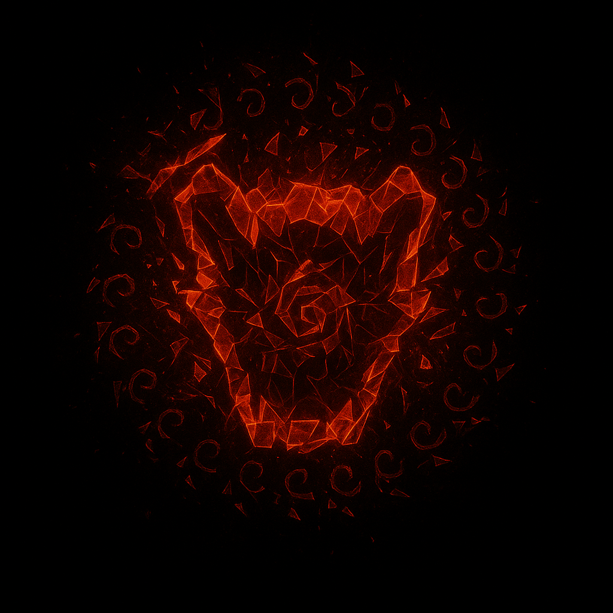

Elemento Nulídrico
Uma essência vermelha que desafia a realidade, capaz de anular a própria existência dos outros elementos. O Elemento Nulídrico é a manifestação da negação absoluta, um poder que corrói e dissolve as forças fundamentais do universo...
O Elemento Nulídrico é uma força sinistra e incompreensível, manifestando-se como uma energia vermelha que consome e anula outros elementos. Sua natureza vai além da simples destruição - ele representa a negação da própria existência, capaz de fazer com que outros poderes elementais simplesmente deixem de existir em sua presença.
Ao dominar o Elemento Nulídrico, o usuário ganha a habilidade aterrorizante de tornar outros elementos completamente inúteis, criando zonas de vazio elemental onde apenas sua vontade prevalece. É um poder que inspira tanto fascínio quanto terror absoluto.
Este elemento é temido em toda Paladium e além, pois sua mera presença pode anular as bases mágicas que sustentam a realidade conhecida, deixando apenas o vazio vermelho de sua essência consumidora.

Dominio
Dominar o Elemento Nulídrico exige confrontar o vazio absoluto e a negação da própria existência. É um caminho perigoso que pode consumir a sanidade do usuário, pois lidar com o poder de anular a realidade requer uma força de vontade sobre-humana.
Deus Babó: O Mistério Encarnado
Babó é uma divindade enigmática cujo verdadeiro propósito permanece um mistério absoluto. Ninguém sabe ao certo o que ele simboliza - alguns afirmam que representa o vazio, outros insistem que personifica a dor, enquanto há aqueles que acreditam que ele seja a própria essência da vida. Esta ambiguidade faz dele uma das forças mais incompreensíveis do universo elemental.
Aqueles poucos que relataram "interagir" com o Deus Babó descrevem uma personalidade complexa e perturbadora: uma criatura sarcástica e brincalhona, que encontra diversão nas ironias da existência, mas que também demonstra uma crueldade implacável quando assim deseja. Sua natureza contraditória reflete perfeitamente o Elemento Nulídrico - um poder que tanto pode anular quanto paradoxalmente afirmar a realidade, dependendo do capricho de seu mestre divino.